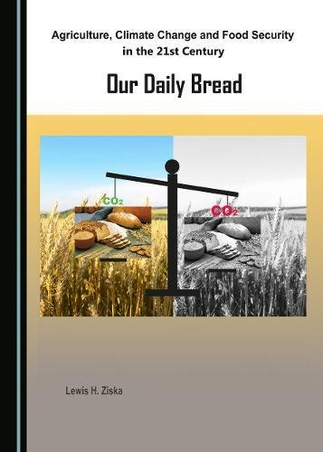
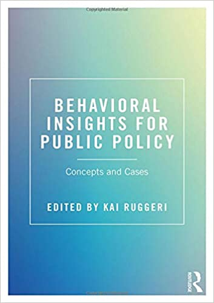

Lewis H. Ziska
Combining the effects of increased atmospheric carbon dioxide on protein, iron, and zinc availability and projected climate change on global diets: a modelling study
Increasing atmospheric concentrations of carbon dioxide (CO2) affect global nutrition via effects on agricultural productivity and nutrient content of food crops. We combined these effects with economic projections to estimate net changes in nutrient availability between 2010 and 2050.
DOI: 10.1016/S2542-5196(19)30094-4
Kai Ruggeri
Nudging intrinsic motivation in environmental risk and social policy
Public and private institutions implement behavioral insights into policies to manage risks associated with environmental and social challenges. Our research using message framing to leverage intrinsic motivation toward pro-environmental and pro-social behaviors supports that effective risk policies should leverage intrinsic motivation to act sustainably.
DOI: 10.1080/13669877.2018.1459799

Kai Ruggeri
A comparison of the methods used to support risk identification for patient safety in one UK NHS foundation trust
In healthcare, various methods are available to support risk identification in risk management process. However, there is no clear evidence on their contribution to risk identification. Our research supports that in any healthcare setting, having a system to put all risk information in one picture would help maximise the contribution of each method within the scope risk management process.
DOI: 10.1177/1356262215580224
Lewis H. Ziska
Carbon dioxide (CO2) levels this century will alter the protein, micronutrients, and vitamin content of rice grains with potential health consequences for the poorest rice-dependent countries
Declines of protein and minerals essential for humans, including iron and zinc, have been reported for crops in response to rising atmospheric carbon dioxide concentration, [CO2].We report for the first time the integrated nutritional impact of those changes (protein, micronutrients, and vitamins) for the 10 countries that consume the most rice as part of their daily caloric supply.
DOI: 10.1126/sciadv.aaq1012

Kai Ruggeri
Behavioral Insights for Public Policy: Concepts and Cases
Written by a team of authors working across both academia and government, Behavioral Insights for Public Policy is the first textbook to fully examine how psychology can be applied to a range of public policy areas. It addresses a wide variety of topics from the origins of policy as well as major findings from behavioral economics and nudge theory, to large-scale applications of behavioral insights.